No es tracta de tenir totes les respostes, sinó de sentir-te acompanyat mentre trobes les teves.
Serveis
Acompanyament online
Des de qualsevol lloc, en un entorn segur.
Contacte inicial
Una primera trucada per conèixer-nos.
Centrat en els teus objectius
Els marques tu; jo t'acompanyo.
El meu enfocament
Com treballo
La teràpia sistèmica considera que les dificultats d'una persona no es poden entendre soles, sinó que cal veure-les dins de les seves relacions i del seu entorn.
Base sistèmica
Parteixo de la teràpia sistèmica però incorporo eines i tècniques d'altres corrents per adaptar-me als objectius de cada persona.
Generar canvi
La teràpia busca generar canvis reals i sostenibles, ajudant la persona a comprendre els seus patrons i descobrir recursos propis.
Respecte a cada relació
Cada vincle és diferent; no jutgem ningú, sinó que oferim eines perquè les persones implicades aconsegueixin els seus objectius.
Per què escollir-me
Tota la trajectòria a Sobre mi →4 anys d'experiència
Teràpia sistèmica i especialitzada.
Psicologia forense
Equip d'Assessorament Tècnic Penal.
Universitat de Barcelona
Equip terapèutic, teràpia sexual i de parella.
Formació contínua
Neuropsicologia i psicologia perinatal.
El teu procés
Ens coneixem
Expliques què necessites i què t'agradaria aportar.
Definim el procés
Fem una primera exploració de la teva situació i objectius, i dissenyem un camí adaptat a tu i al teu moment.
Treballem i fem seguiment
Acompanyament constant amb eines i recursos; revisem els avenços i celebrem cada pas endavant.
Sobre mi
Qui soc
En dic Núria Llurba, soc psicòloga, especialitzada en teràpia sexual i de parella, amb formació complementària en teràpia familiar, i properament també en neuropsicologia i psicologia perinatal. Acompanyo persones adultes, adolescents i joves en processos de canvi, oferint un espai segur, proper i professional on posar paraules al que es viu.
Entenc la teràpia com un procés compartit: no hi ha camins únics ni solucions màgiques, sinó una feina conjunta per comprendre't millor, descobrir els teus recursos i avançar cap al teu benestar amb respecte al teu ritme.
Col·legiada núm. 33667 · COPC·Grau en Psicologia·Teràpia sexual i de parella
La meva metodologia
Com treballo
El meu enfocament és sistèmic però incorporo eines d'altres corrents per poder oferir unes sessions més adaptades a cada persona i circumstància. La teràpia sistèmica parteix de la idea que les dificultats d'una persona no es poden entendre aïlladament, sinó que s'han d'entendre dins del context de les seves relacions i dels sistemes en què participa.
Base sistèmica
Les dificultats no es poden entendre aïlladament, sinó dins del context de les relacions i els sistemes en què participem.
Patrons i connexions
Aquesta perspectiva ajuda a veure patrons, connexions i influències que sovint passen desapercebuts.
Canvis reals
L'objectiu és intervenir de manera que es generin canvis reals i sostenibles.
Experiència professional
Trajectòria i especialització
Universitat de Barcelona
Psicoteràpia
Actualment, formo part d'un equip terapèutic a la UB especialitzat en l'abordatge de teràpia sexual i de parella. En aquest context, col·laboro en la intervenció de casos complexos des d'una mirada compartida, tasca que combino amb el meu rol com a terapeuta en altres processos clínics dins de la mateixa unitat.
Aquest espai de pràctica continuada em permet desenvolupar i perfeccionar les meves competències en teràpia sistèmica i en l'acompanyament a parelles i persones amb dificultats sexuals. Així mateix, m'aporta habilitats clau en la supervisió de casos i en l'anàlisi clínica compartida amb altres professionals del sector.
Equip d'Assessorament Tècnic Penal
Psicologia forense
En l'àmbit de la justícia penal, la meva tasca es va centrar en la protecció i recollida del testimoni de menors víctimes d'abús sexual, prova preconstituïda. Mitjançant l'entrevista cognitiva, es garanteix que el testimoni de l'infant tingui validesa judicial en un entorn protegit, evitant que hagi de declarar davant el tribunal i minimitzant el seu impacte emocional.
Aquesta experiència m'ha proporcionat les habilitats necessàries per treballar amb delicadesa, empatia i rigor professional, competències que trasllado a tots els àmbits de la meva pràctica.
Formació continuada
Formació i especialitzacions
La meva trajectòria acadèmica s'inicia amb el Grau en Psicologia per la Universitat Oberta de Catalunya (UOC), on vaig cursar l'especialitat en Psicologia de la Salut, una base fonamental per a l'abordatge del benestar humà des d'una perspectiva científica.
Màster en Teràpia Sexual i de Parella · UB
Amb l'objectiu d'especialitzar-me en la complexitat de les relacions i la intimitat, una formació que m'ha proporcionat les competències clíniques necessàries per intervenir en les dinàmiques vinculars i la salut sexual.
Dol Gestacional i Neonatal · COPC
Formació específica per atendre amb delicadesa i rigor els processos de dol davant la mort d'un fill o filla en l'etapa perinatal.
Primers passos
Com serà començar?
Trucada inicial gratuïta
Una entrevista telefònica per conèixer la demanda i valorar, per ambdues parts, si soc la professional adequada.
Metodologia i primera sessió
T'explico breument la meva metodologia i acordem una data per començar, amb claredat i tranquil·litat.
Acompanyament online
Sessions des de qualsevol lloc, estalviant desplaçaments, en un entorn segur i confidencial.
Filosofia
Els objectius sempre els marca la persona o persones consultores.
Jo no imposo metes ni camins concrets, sinó que adapto l'acompanyament a les necessitats, els ritmes i les prioritats de cadascú. Això garanteix que la intervenció sigui realment significativa per a qui la viu.
Totes les sessions es duen a terme sota un compromís absolut de confidencialitat, garantint que la informació compartida queda protegida i que l'espai terapèutic és segur i respectuós.
Primera trucada d'orientació gratuïta · 699 611 264
Els meus serveis
Serveis
Diferents espais i formats d'acompanyament pensats per adaptar-se al que necessites en cada moment. Tria l'opció que millor et representa.
Els meus serveis
Consulta
Sessions individuals, de parella i familiars per treballar el que t'amoïna, entendre't millor i avançar cap al que necessites. Tria una modalitat per veure'n el detall.
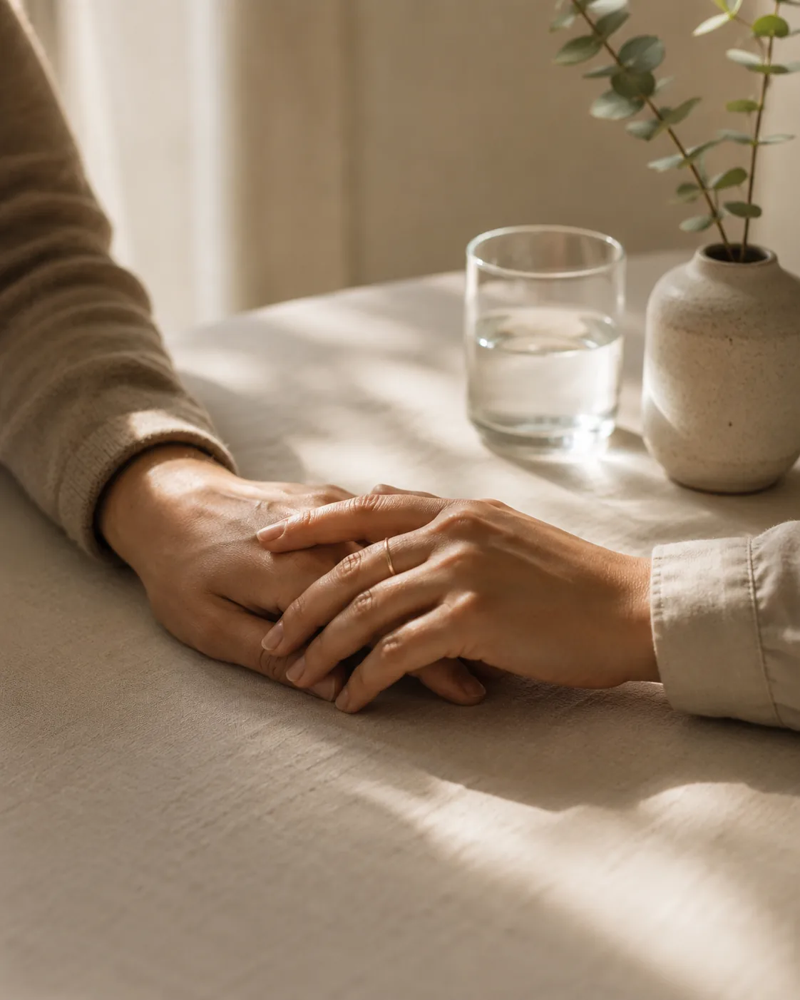
Teràpia de parella
No té perquè ser el final, sinó una crida a fer-ho diferent.
Què passa quan la parella deixa de ser un lloc on descansar i es converteix en un espai ple de malentesos, pors, silencis o distància? Sovint no és falta d'estima, sinó falta d'eines.
Un espai per posar llum al que passa, entendre què s'ha anat trencant i trobar noves maneres de comunicar-se i de reconnectar — tant si voleu retrobar-vos com tancar una etapa de manera conscient i respectuosa.
Us pot ajudar si…
- Us costa comunicar-vos sense acabar discutint
- Sentiu distància, silencis o desconnexió
- Voleu decidir junts com continuar
Preu
70 € / sessió
Durada
Sessions d'una hora aproximadament
Adreçat a
Parelles de qualsevol edat, orientació o tipus de relació
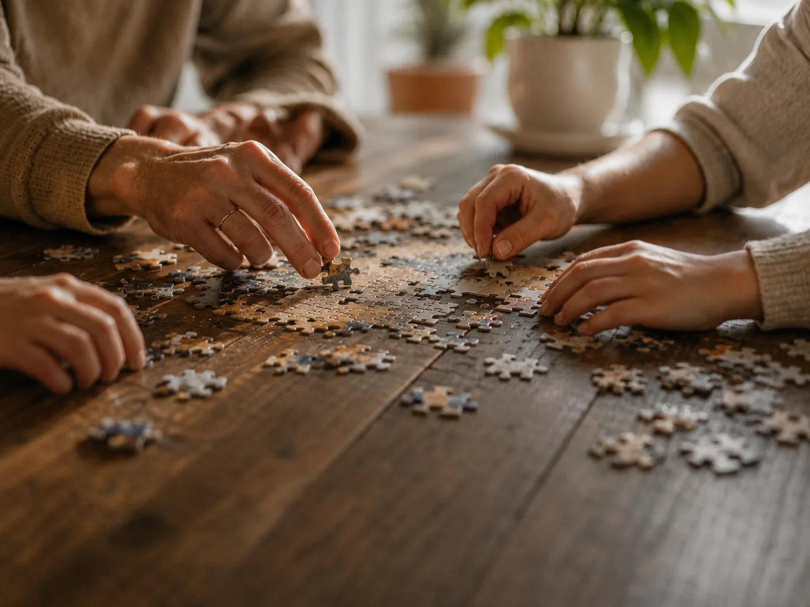
Teràpia familiar
No es tracta de tornar enrere, sinó de trobar una nova manera d’estar junts.
Quan una família deixa de funcionar com abans, què està passant realment? És una qüestió d'edats, de moments vitals... o de maneres de relacionar-se que ja no encaixen?
No es tracta de buscar responsables, sinó de donar veu a totes les parts i posar paraules al que sovint queda silenciat, per crear noves formes de comunicació i una convivència més clara i respectuosa.
Us pot ajudar si…
- La convivència genera tensió o distància
- Es repeteixen conflictes que no es resolen
- Voleu recuperar la comunicació entre vosaltres
Preu
70 € / sessió
Durada
Sessions d'una hora aproximadament
Adreçat a
Famílies de qualsevol composició i moment vital
Teràpia sexual
Potser és el moment de transformar el dubte en descobriment.
Què passa quan el sexe deixa de ser un espai de plaer, connexió o curiositat i es converteix en una font de dubtes, tensions, silencis o incomoditat?
Un espai per parlar de sexualitat amb naturalitat, sense presses ni judicis. La sexualitat no és només una resposta física: està lligada a les emocions, a la història personal i a la manera com ens relacionem. Pot ser individual o en parella.
Us pot ajudar si…
- Vius la sexualitat amb malestar, pressió o vergonya
- Hi ha bloquejos, pors o creences que et limiten
- Voleu millorar la comunicació íntima
Preu
60 € individual · 70 € en parella
Durada
Sessions d'una hora aproximadament
Adreçat a
Persones i parelles de qualsevol edat, identitat o orientació
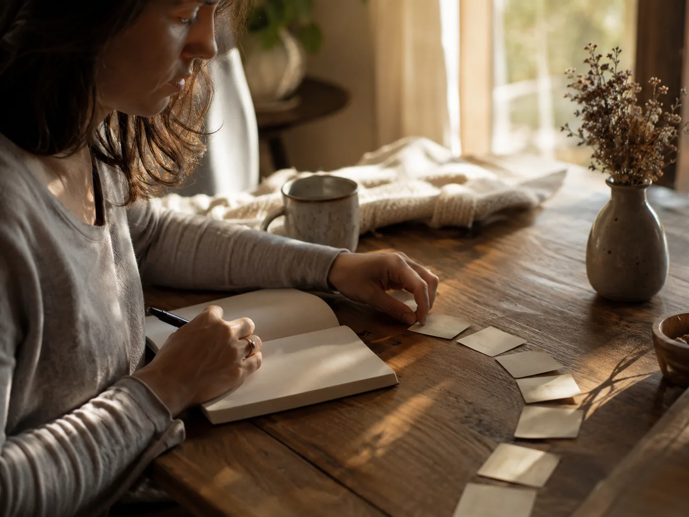
Acompanyament psicològic
No hi ha solucions màgiques, sinó un espai per entendre, explorar i transformar.
Què passa quan la vida et posa davant reptes que semblen massa grans per afrontar-los sol?
Un lloc on parlar obertament de les pròpies dificultats, descobrir noves perspectives i trobar estratègies per sentir-te més equilibrat i segur. No només per a moments crítics: també per créixer, conèixer-te millor i gestionar els alts i baixos amb més serenitat.
Us pot ajudar si…
- L'ansietat, l'estrès o la tristesa et desborden
- Et costa prendre decisions importants
- Vols conèixer-te millor i créixer personalment
Preu
50 € / sessió
Durada
Sessions d'una hora aproximadament
Adreçat a
Adolescents i adults
Primera trucada d'orientació
Gratuïta
15 minuts per conèixer-nos i valorar si soc la professional adequada per al teu cas.
699 611 264Tarifes orientatives. Consulta condicions i bonificacions.
Els meus serveis
Tallers
Els tallers són espais vivencials i participatius que permeten aprendre, compartir i créixer en grup. Estan pensats per oferir recursos pràctics i acompanyament en diferents etapes vitals, així com per crear vincles amb altres persones que viuen experiències similars. En aquests espais, el coneixement professional es combina amb la calidesa del compartir col·lectiu, generant un entorn segur, enriquidor i transformador.
Per infants i adolescents
Tallers a escoles i instituts
Trencar el silenci: assetjament escolar
I què puc fer jo perquè no hi hagi conductes d'assetjament a la meva aula?
Quan va ser que vam començar a trobar normal que algú quedés fora del grup?
Un espai per parlar-ne sense por i descobrir que tots tenim un paper —també qui mira i calla— a l'hora de trencar el cercle de la indiferència.
Objectius
- Comprendre l'assetjament escolar i les seves diferents formes
- Reconèixer el paper de la víctima, l'agressor i l'espectador
- Fomentar vincles saludables i respectuosos dins del grup
Durada
1 sessió de 90 min (adaptable a 60)
Edat recomanada
De 8 a 18 anys
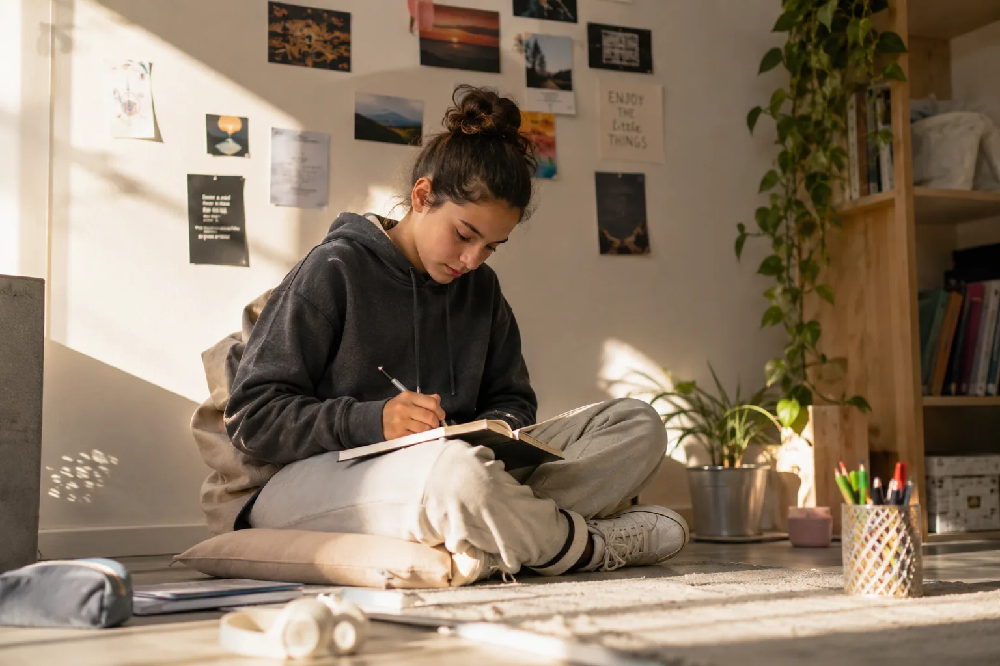
Em sento, m'escolto, m'entenc
I si entendre com em sento fos el primer pas per començar a entendre els altres?
Com pot ser que allò que sentim tingui tant poder sobre el que fem, el que diem, el que som?
Un espai per posar paraules al que costa expressar i aprendre a conviure amb les emocions sense deixar que ens dominin.
Objectius
- Identificar, expressar i comprendre les pròpies emocions
- Desenvolupar empatia cap a les emocions dels altres
- Aprendre a gestionar la frustració, la ràbia o la tristesa
Durada
1 sessió de 90 min (adaptable a 60)
Edat recomanada
De 8 a 18 anys
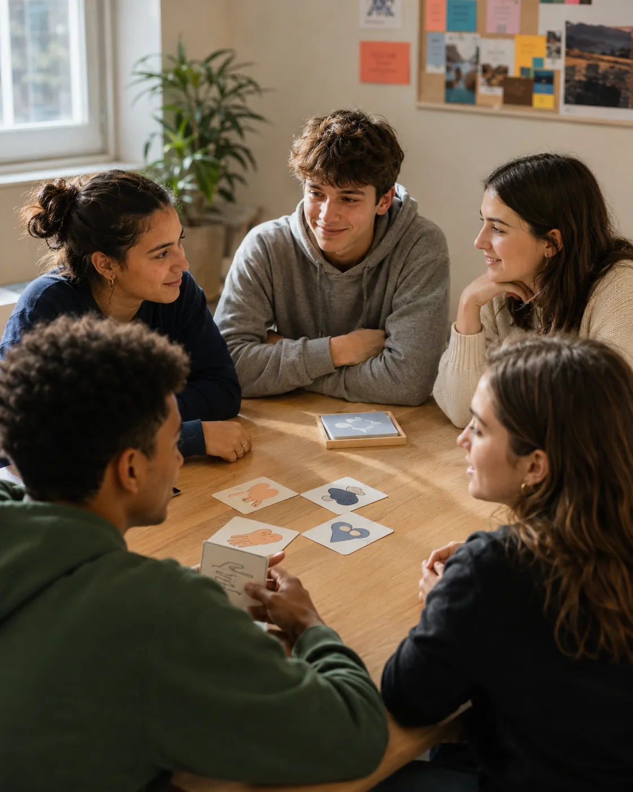
Sexualitat i afectivitat: parlar-ne sense vergonya
Parlar de sexualitat és parlar de dignitat, no només de desig.
Què vol dir realment parlar de sexualitat?
Un espai segur per parlar de relacions, consentiment i salut sexual amb naturalitat, sense judicis ni tabús, adaptat a cada edat.
Objectius
- Fomentar una visió positiva i respectuosa de la sexualitat
- Reflexionar sobre els límits i el consentiment
- Donar informació veraç sobre prevenció i autocura
Durada
1 o 2 sessions de 90 min
Edat recomanada
De 12 a 18 anys (adaptable)
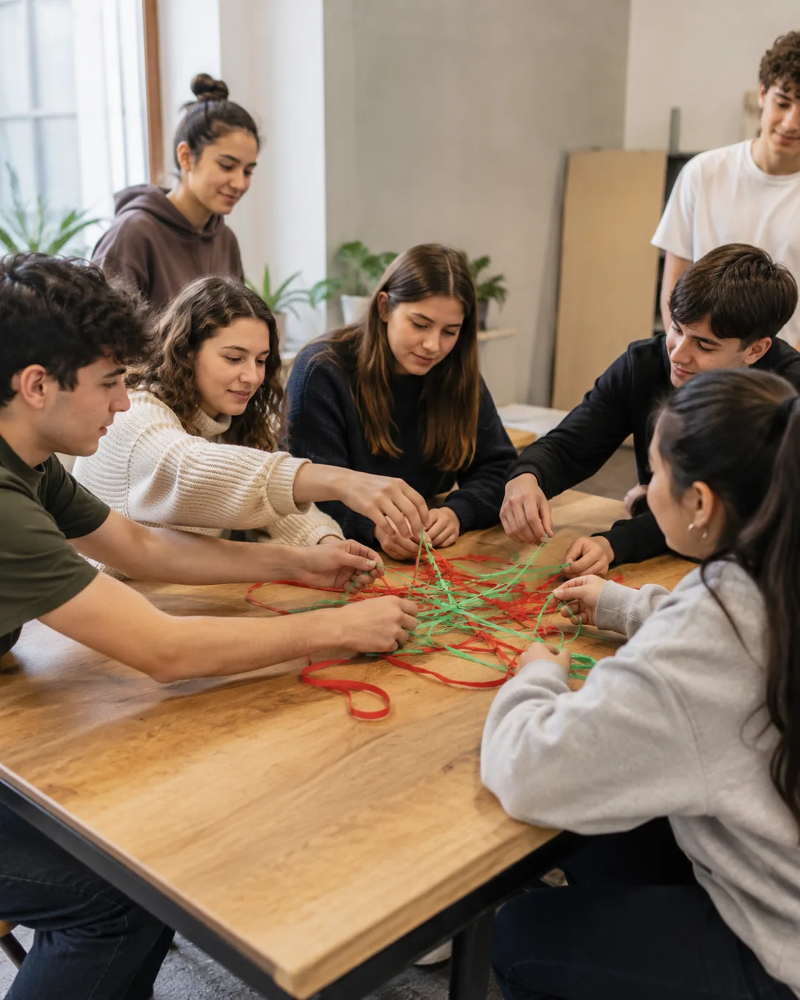
Relacions sanes i prevenció de violència
No vull un amor que em salvi. Vull un amor que em respecti.
Realment hem de creure que només som una meitat?
Qüestionem els mites de l'amor romàntic i aprenem a reconèixer les senyals que diferencien un vincle sa d'un que fa mal.
Objectius
- Reconèixer els signes de la violència de gènere
- Fomentar la igualtat i la llibertat en les relacions
- Donar eines per identificar conductes de control o gelosia
Durada
1 sessió de 90 min (adaptable a 60)
Edat recomanada
De 10 a 18 anys
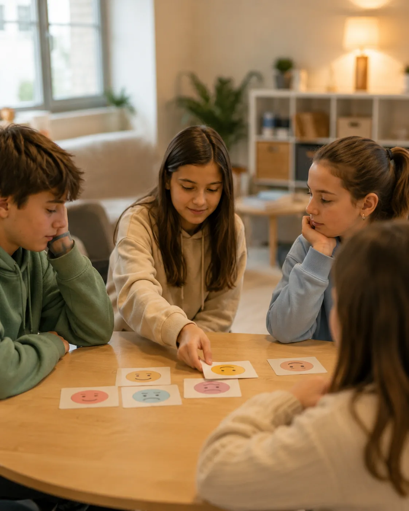
Parlar i escoltar: comunicació assertiva i resolució de conflictes
Guanyar una discussió mai no és tan valuós com no perdre el respecte.
Quantes vegades ens sentim realment escoltats?
Aprenem a expressar desacords amb respecte i a transformar la discussió en diàleg, des de l'escolta i no des de la victòria.
Objectius
- Desenvolupar comunicació assertiva i escolta activa
- Aprendre a gestionar conflictes de manera positiva
- Fomentar el respecte i la cooperació dins el grup
Durada
1 sessió de 90 min (adaptable a 60)
Edat recomanada
De 12 a 17 anys
Adolescència: identitat, canvis i límits
No cal tenir-ho tot clar per saber cap on vols anar, només començar a escoltar-te de debò.
Qui vull ser jo?
Un espai per parlar d'identitat, dels canvis que arriben sense permís i dels límits, propis i aliens.
Objectius
- Acompanyar el procés d'identitat propi de l'adolescència
- Treballar els límits personals i el respecte cap als altres
- Fomentar l'autoestima i la presa de decisions responsable
Durada
1 sessió de 90 min (adaptable a 60)
Edat recomanada
De 10 a 16 anys
Per famílies
Tallers per a pares, mares i tutors
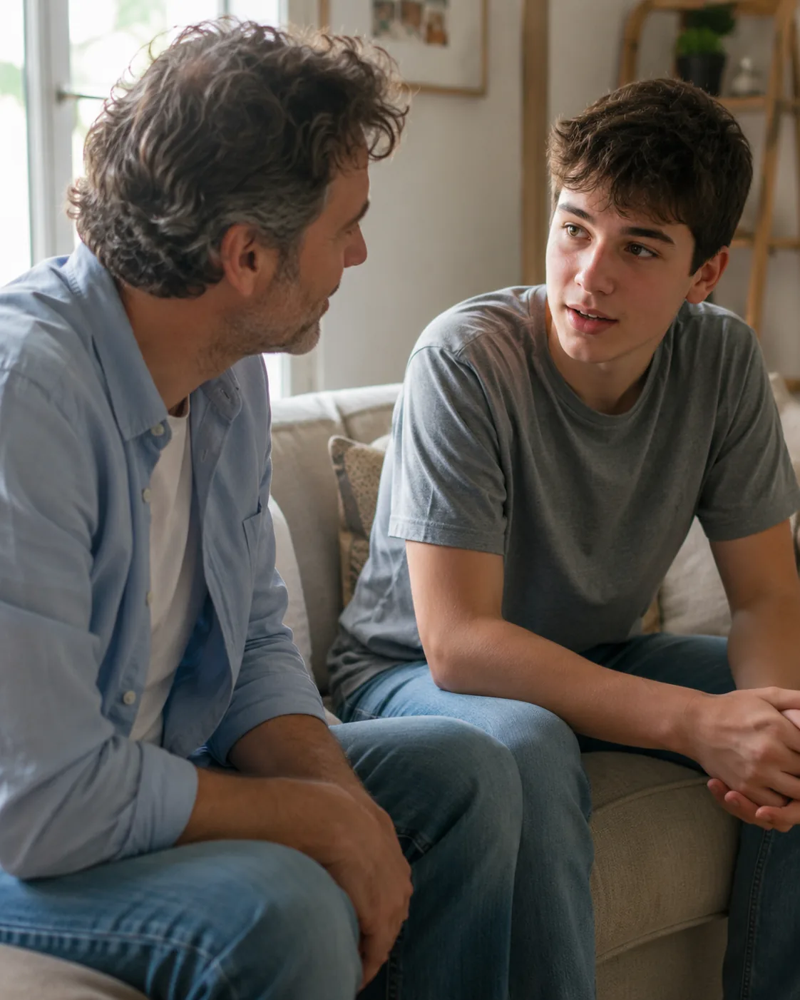
Com comunicar-te amb un adolescent
Potser créixer no és allunyar-se, sinó trobar noves maneres de tornar a acostar-se.
Quan va començar aquest silenci?
Eines per comunicar-nos amb adolescents des de la confiança, la paciència i el respecte, sense trencar el diàleg.
Objectius
- Comprendre els canvis emocionals i conductuals de l'adolescència
- Aprendre estratègies de comunicació positiva
- Reforçar el vincle familiar des del respecte i la confiança
Durada
1 sessió de 90 min (adaptable)
Públic objectiu
Pares, mares i tutors d'adolescents
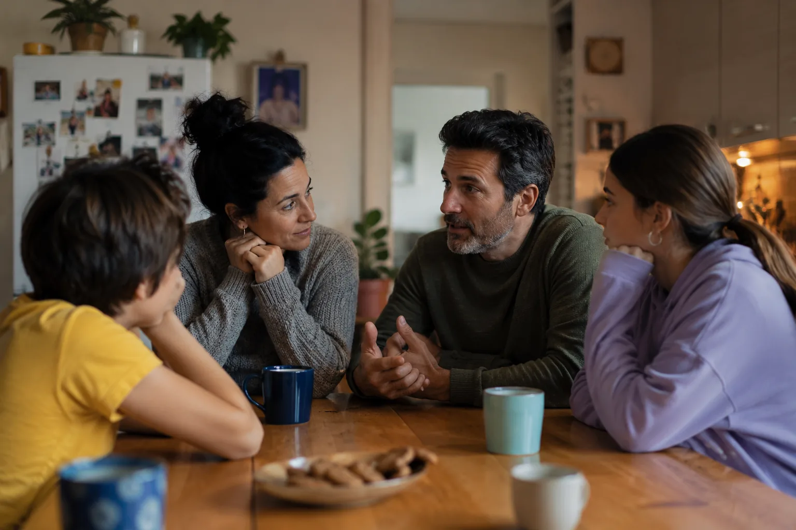
Parlar de sexualitat en família: confiança sense tabús
Parlar de sexualitat no és perdre la innocència, és guanyar en consciència.
On és el punt entremig entre evitar el tema i banalitzar-lo?
Estratègies per parlar de sexualitat i afectivitat a casa, adaptant el llenguatge a cada edat amb naturalitat.
Objectius
- Donar eines per parlar de sexualitat i afectivitat en família
- Superar tabús i pors associats a l’educació sexual
- Fomentar una comunicació oberta segons l’edat
Durada
1 sessió de 90 min (adaptable)
Públic objectiu
Pares, mares i tutors d'infants i adolescents
Entendre i afrontar l'assetjament escolar des de casa
Potser el primer pas per frenar l'assetjament és aprendre a mirar-lo de cara, sense por ni excuses.
Què fer quan els fills diuen que tot va bé?
Eines per detectar canvis, escoltar sense jutjar i acompanyar des d'un paper actiu i proper.
Objectius
- Comprendre què és l'assetjament i com es manifesta
- Analitzar l'impacte en víctimes, agressors i espectadors
- Desenvolupar estratègies familiars d'actuació
Durada
1 sessió de 90 min (adaptable)
Públic objectiu
Pares, mares i tutors d'infants i adolescents
Vols més informació?
Cada taller s'adapta al grup, l'edat i el context. Escriu-me i et faré arribar disponibilitat, format i pressupost sense compromís.
Els meus serveis
Club Hípic Julivert
Modalitats
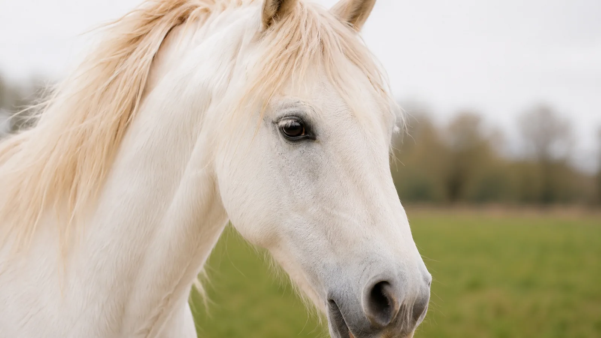
Mindfulness amb Cavalls
Estar present, sentir, connectar: aquí i ara amb cada pas.
T'has aturat mai a notar què passa dins teu mentre observes un cavall? El mindfulness amb cavalls és una pràctica que combina atenció plena i connexió amb l'animal. Mitjançant exercicis de respiració, observació i interacció respectuosa amb el cavall, els participants aprenen a estar presents, reconèixer les seves emocions i desenvolupar una major coherència interna.
És una experiència tranquil·la, enriquidora i reflexiva, que convida a portar aquesta presència a la vida quotidiana.
Tarifa individual
70 €
Tarifa grupal / familiar
A consultar
Durada
60–75 minuts
Públic objectiu
Adults que volen aprendre a gestionar l'estrès i les emocions, millorar la concentració i la consciència corporal.
Superar Pors i Traumes amb Cavalls
No és el cavall qui et guia, ets tu mateix que reaprens a confiar.
Com es reconstrueix la confiança després d'un accident o una experiència que ens ha marcat? Aquesta teràpia combina la teràpia narrativa amb tècniques cognitiu-conductuals i exercicis vivencials amb cavalls per processar traumes i por.
Es treballa a consulta i en interacció directa amb l'animal, ajudant a comprendre les pròpies reaccions, integrar l'experiència i reconstruir la confiança i el sentit de seguretat. És un espai on experimentar el canvi com a vivència real, amb suport i seguretat.
Tarifa individual
70 €
Tarifa grupal / familiar
A consultar
Durada
60–75 minuts
Públic objectiu
Genets o persones amb fòbies o pors després de traumes amb cavalls, que volen recuperar seguretat i control.
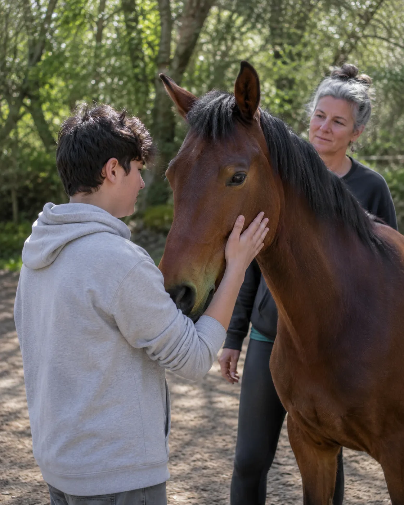
Reforç Emocional amb Cavalls
Aprendre a confiar en tu mateix mentre confies en ell.
Com podem conèixer-nos millor i enfortir la nostra autoestima amb un mirall tan sincer com un cavall? Aquestes sessions utilitzen el cavall com a mirall emocional per treballar autoestima, empoderament i regulació emocional.
Permet experimentar lideratge, límits i autocontrol de manera vivencial i segura, observant com les nostres emocions i actituds afecten la interacció amb l'animal i amb els altres.
Tarifa individual
70 €
Tarifa grupal / familiar
A consultar
Durada
60–75 minuts
Públic objectiu
Adolescents, adults i famílies que busquen millorar l'autoestima, la coherència interna i la regulació emocional.
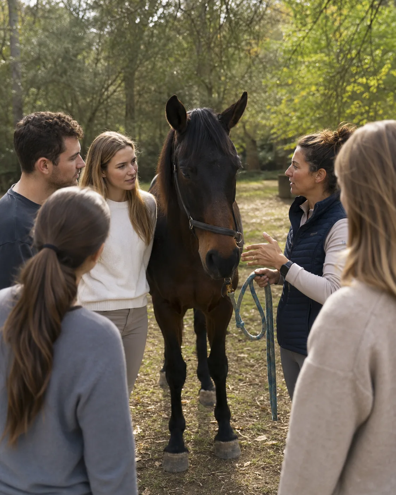
Team Building amb Cavalls
Aprendre junts, créixer junts: cada pas compta.
Què passa quan l'equip ha d'aprendre a comunicar-se sense paraules i a confiar sense pressions? Aquestes sessions combinen dinàmiques de grup amb la interacció amb cavalls, fomentant empatia, confiança, coordinació i presa de decisions conjunta.
Els participants descobreixen habilitats personals i col·lectives, reflexionen sobre la comunicació i el lideratge, i experimenten un aprenentatge vivencial transferible a la feina.
Tarifa individual
70 €
Tarifa grupal / familiar
A consultar
Durada
60–75 minuts
Públic objectiu
Empreses i grups professionals que volen millorar cohesió, comunicació i lideratge a través d'experiències vivencials.
Excursions Escolars i Tallers Educatius amb Cavalls
Deixa que els cavalls t'ensenyin a posar-te a la pell dels altres.
I si aprendre sobre responsabilitat, empatia i treball en equip fos una aventura amb cavalls? Les excursions escolars amb cavalls permeten aprendre valors com responsabilitat, empatia, autocontrol i cooperació, amb activitats adaptades a l'edat i necessitats del grup.
Els alumnes connecten amb els animals i amb els companys, experimentant el desenvolupament emocional i social d'una manera pràctica i divertida.
Tarifa individual
70 €
Tarifa grupal / familiar
A consultar
Durada
60–75 minuts
Públic objectiu
Escolars de diverses edats que volen aprendre habilitats emocionals i socials d'una manera pràctica i vivencial.
Hípic Clínic
Aprendre i perfeccionar la tècnica, entrenar la ment.
Com seria poder perfeccionar les teves habilitats amb cavalls mentre aprens a gestionar les teves emocions en cada repte? Els Hípic Clínic són seminaris pràctics dissenyats per combinar l'aprenentatge i el perfeccionament de tècniques eqüestres amb estratègies psicològiques per gestionar l'estrès, les emocions i la concentració.
Guiats per una genet professional i una psicòloga, els participants treballen habilitats de muntar, conduir i comunicar-se amb el cavall, mentre exploren recursos per mantenir la calma i el control en situacions de pressió. Cada sessió és intensa, vivencial i enfocada a potenciar el rendiment i el benestar, proporcionant eines tant tècniques com emocionals que es poden aplicar immediatament en la pràctica eqüestre.
Tarifa individual
70 €
Tarifa grupal / familiar
A consultar
Durada
60–75 minuts
Públic objectiu
Genets, aficionats i professionals de l'equitació que volen millorar tècnica, confiança i gestió emocional en competicions o entrenaments.
Estar present, sentir, connectar: aquí i ara amb cada pas.
El Club Hípic Julivert és un espai situat a Vinyols i els Arcs on els cavalls viuen en règim de semillibertat, envoltats de natura i calma. Aquest projecte neix de la col·laboració amb la Yasmina, experta en etologia equina, genet i professora d'hípica, amb una mirada centrada en el respecte i la confiança.
La unió entre la psicologia i el món del cavall fa possible un acompanyament cuidat i respectuós, on l'entorn, els animals i les persones formen part d'un mateix procés.
Club Hípic Julivert
Vine a conèixer-nos
Escriu-nos per horaris, preus i disponibilitat de les activitats a Vinyols i els Arcs.
Contacte
Parlem?
Telèfon
Correu electrònic
Modalitat online
Acompanyament 100% online. Escriu-me i concretem el millor moment per a tu, des d'on et vagi millor.
Club Hípic Julivert
Vinyols i els Arcs. Espai natural per a les intervencions assistides amb cavalls.
Preguntes freqüents
Preguntes freqüents
Les sessions individuals duren uns 50–60 minuts; les de parella i família, entre 75 i 90 minuts.
Sí. L'acompanyament és 100% online, des de qualsevol lloc, en un entorn segur i confidencial. (El Club Hípic Julivert, per la seva naturalesa, és presencial a Vinyols i els Arcs.)
Sí. Tot el que es parla a consulta és estrictament confidencial.
Habitualment setmanals o quinzenals, adaptant-nos al teu procés.
Pots escriure'm pel formulari de contacte o trucar al 699 611 264.
"Les dificultats d'una persona no es poden entendre aïlladament, sinó que s'han d'entendre dins del context de les seves relacions"
— Enfocament Sistèmic
Recursos
Blog
Reflexions, recursos i eines sobre psicologia, emocions i relacions. Cerca per paraula clau o etiqueta.